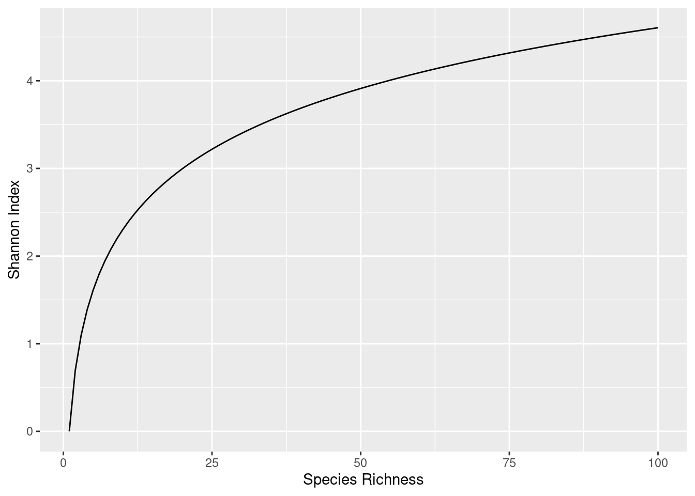

5 Shannon Index
This section introduces the Shannon Index as a simple measure of community diversity.
- We introduce the concept of Shannon Index and explain what it means.
- We walk through calculation of the Shannon Index in
R, using data from our example community in Chapter 4.- We relate the actions in our
Rwalkthrough to the equation for Shannon Index, at each step.
- We relate the actions in our
- We introduce the concept of Effective number of species in a community and how this relates to Shannon Index.
To understand diversity, we need to consider both richness and evenness, as described in Chapter 4.
We can obtain a simple count of species to calculate richness. But we also know that if each species is present in about the same abundance there is high evenness, and if the population is dominated by a single species there is low evenness. But by itself this idea of evenness does not give us a number that we can use to compare communities.
There are mathematical formulae that allow us to turn this concept of evenness into a number, and we can calculate such values for a community using R.
5.1 What is the Shannon index?
The Shannon Index (\(H\)) is arguably the simplest quantitative measure of community evenness/diversity, and is described by Equation 5.1. Shannon Index varies between:
- a value close to zero (for very uneven communities)
- the value \(\ln(N)\) for a community with \(N\) evenly-distributed species.
The way that the maximum value of Shannon Index varies with species richness (count of species) is shown in Figure 5.1.
\[ H = -\sum_{i=1}^{N} p_i \ln(p_i) \tag{5.1}\]
5.1.1 What does the equation for Shannon Index mean?
The Shannon Index describes the evenness of species in a community. Representing a single species from the community as the letter \(i\), we can calculate the relative abundance of that species in the community as its abundance (the count of individuals from species \(i\)) divided by the total abundance for all species. We call this relative abundance \(p_i\).
Equation 5.1 takes this value and transforms it into the Shannon Index, represented as \(H\). The resulting value varies between zero (maximally uneven, not diverse), and some maximum value (maximally even, very diverse), as represented in Figure 5.1. Knowing the richness (total number of species) for a community and the Shannon Index (\(H\)), we can quantify how diverse our community is.
5.2 Calculating Shannon Index for our Mars Community
5.2.1 Collecting data about our community
Let’s start in R by defining our dataset for the Mars community.
In the code below we create two vectors: one of species names, and one of counts for those species in our sample (which we can get from Figure 4.3). We combine these vectors into a single dataframe, for convenience.
# Define a vector of species names
species <- c("Malteaser sp.", "Snickers sp.", "Twix sp.", "Mars sp.",
"Milky way", "Bounty sp.", "Galaxy choc", "Galaxy caramel")
# Define a vector of corresponding species counts
count <- c(3, 6, 6, 7, 7, 5, 3, 3)
# Bring these together in a dataframe
community.df <- data.frame(species, count)species | count |
|---|---|
Malteaser sp. | 3 |
Snickers sp. | 6 |
Twix sp. | 6 |
Mars sp. | 7 |
Milky way | 7 |
Bounty sp. | 5 |
Galaxy choc | 3 |
Galaxy caramel | 3 |
5.2.2 Calculating relative abundance
The first step in calculating Shannon Index is to calculate the relative abundance \(p_i\) of each species \(i\). To do this, we calculate the percentage of the entire community that is made up from each species, as below. We divide the count for each species by the sum of counts for all species (i.e. the total number of individuals, in this case).
# Calculate relative abundances
community.df$rel_abd <- community.df$count / sum(community.df$count)species | count | rel_abd |
|---|---|---|
Malteaser sp. | 3 | 0.075 |
Snickers sp. | 6 | 0.150 |
Twix sp. | 6 | 0.150 |
Mars sp. | 7 | 0.175 |
Milky way | 7 | 0.175 |
Bounty sp. | 5 | 0.125 |
Galaxy choc | 3 | 0.075 |
Galaxy caramel | 3 | 0.075 |
Mathematical Content!
How does what we’ve just done in R relate to Equation 5.1?
For each of our species (denoted by \(i\) in the equation), we have calculated the relative abundance \(p_i\), which is used in the part of Equation 5.2 indicated in red, below.
\[ H = -\sum_{i=1}^{N} \color{red}{p_i} \color{black}{\ln(p_i)} \tag{5.2}\]
5.2.3 Calculating Shannon Index
To turn this data into the Shannon Index, we need to carry out two more steps: calculate the natural log of the relative abundance of each species (\(\ln(p_i)\)), then multiply this by the corresponding relative abundance (\(p_i\)), as in the R code below:
# Calculate the natural log of relative abundance
community.df$ln_rel_abd <- log(community.df$rel_abd)
# Multiply the relative abundance by its natural log
community.df$mult <- community.df$rel_abd * log(community.df$rel_abd)species | count | rel_abd | ln_rel_abd | mult |
|---|---|---|---|---|
Malteaser sp. | 3 | 0.075 | -2.590267 | -0.1942700 |
Snickers sp. | 6 | 0.150 | -1.897120 | -0.2845680 |
Twix sp. | 6 | 0.150 | -1.897120 | -0.2845680 |
Mars sp. | 7 | 0.175 | -1.742969 | -0.3050196 |
Milky way | 7 | 0.175 | -1.742969 | -0.3050196 |
Bounty sp. | 5 | 0.125 | -2.079442 | -0.2599302 |
Galaxy choc | 3 | 0.075 | -2.590267 | -0.1942700 |
Galaxy caramel | 3 | 0.075 | -2.590267 | -0.1942700 |
Mathematical Content!
Here’s how these two actions relate to Equation 5.1.
Firstly, for each of our species, we calculated the natural log of the relative abundance: \(\ln(p_i)\), shown in red in Equation 5.3.
\[ H = -\sum_{i=1}^{N} p_i \color{red}{\ln(p_i)} \tag{5.3}\]
Next, we calculated the product of \(p_i\) and \(\ln(p_i)\), highlighted in orange in Equation 5.4.
\[ H = -\sum_{i=1}^{N} \color{orange}{{p_i} \ln(p_i)} \tag{5.4}\]
The Shannon Index is then the sum of this final column of values (multiplied by -1 to make it a positive value).
shannon_index = -sum(community.df$mult)
shannon_index[1] 2.021916
Mathematical Content!
Summing the product \(p_i \ln(p_i)\) for each species \(i\), and multiplying it by \(-1\) is indicated by the part of Equation 5.5 highlighted in red.
\[ H = \color{red}{-\sum_{i=1}^{N}} \color{black}{p_i \ln(p_i)} \tag{5.5}\]
5.2.4 Understanding the Shannon Index
So, we have a number \(H = 2.02\) as the Shannon Index for our sample. How do we interpret this?
Remember from earlier that the maximum Shannon Index - corresponding to maximum diversity - for a sample with eight species is \(\ln(8) = 2.08\). The value we calculated here, \(H = 2.02\), is close to this value and so we can conclude that our sample is very diverse.
There is another way to think about this number, called the effective number of species.
5.3 The Effective Number of Species for a community
We can use the Shannon Index to calculate a value known as the effective number of species for a community. This name reflects that, although a community might contain a certain number of species, if some species are only present in very low abundance, they are not contributing significantly to the community, and they are effectively not present, and the effective number of species is less - maybe much less - than the richness of the community.
For example:
- A community with three species in equal proportions, e.g. 33% \(A\), 33% \(B\), and 33% \(C\) clearly has three equally-contributing species. We might expect the effective number of species to be three.
- A community dominated by a single species, e.g. 1% \(A\), 1% \(B\), and 98% \(C\) might effectively have only one species: species \(C\).
By taking the exponential of the Shannon Index, we calculate a value known as the effective number of species, or Diversity (\(D\)) of a community. The mathematical equation is given in Equation 5.6.
\[ D = \exp(H) \tag{5.6}\]
Mathematical content
This works because, as we noted earlier, a community with \(N\) evenly-represented species has a Shannon Index of \(H = \ln(N)\). Hence, when this is true:
\[ D = \exp(H) = \exp(\ln(N)) = N \]
and so, in this special case of absolute evenness, effective number of species is the same as the actual number of species.
5.3.1 The Effective Number of Species for our Mars sample
The Shannon Index for our Mars sample was \(2.021916\), and we can use R to calculate a corresponding Diversity value \(D\) by taking the exponential of this number:
diversity = exp(2.021916)
diversity[1] 7.552782This gives a value of \(D = 7.55\) for the effective number of species. This is close to the actual number of species in our sample - the richness value - of eight, which indicates that our sample is highly diverse.